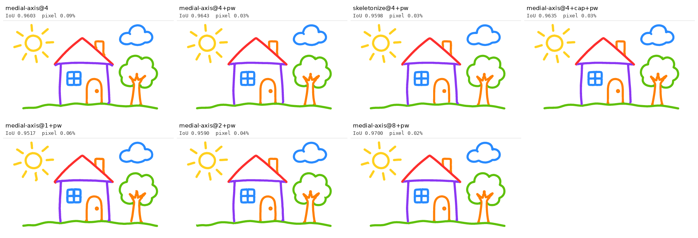

| image | tag | iou | pixelDiffPct | symDiffFrac | boundaryMedian | boundaryP95 | centerlineMedian | centerlineP95 | edges | nodes | bezierSegments | controlPoints | fileBytes | extractSeconds |
|---|---|---|---|---|---|---|---|---|---|---|---|---|---|---|
| house-wide | medial-axis@4 | 0.9603 | 0.0900 | 0.0406 | 0.2500 | 1.1180 | - | - | 55 | 68 | 171 | 568 | 10581 | 7.1922 |
| house-wide | medial-axis@4+pw | 0.9643 | 0.0300 | 0.0363 | 0.2500 | 1.0000 | - | - | 55 | 68 | 206 | 673 | 14846 | 7.3482 |
| house-wide | skeletonize@4+pw | 0.9598 | 0.0300 | 0.0409 | 0.2500 | 1.2500 | - | - | 45 | 57 | 191 | 618 | 12616 | 7.5563 |
| house-wide | medial-axis@4+cap+pw | 0.9635 | 0.0300 | 0.0373 | 0.2500 | 1.0000 | - | - | 55 | 68 | 206 | 673 | 14686 | 7.2716 |
| house-wide | medial-axis@1+pw | 0.9517 | 0.0600 | 0.0499 | 0.3536 | 1.2500 | - | - | 52 | 65 | 250 | 802 | 16227 | 4.2525 |
| house-wide | medial-axis@2+pw | 0.9590 | 0.0400 | 0.0420 | 0.2500 | 1.0308 | - | - | 54 | 67 | 231 | 747 | 15315 | 1.7710 |
| house-wide | medial-axis@8+pw | 0.9700 | 0.0200 | 0.0305 | 0.2500 | 1.0000 | - | - | 88 | 99 | 242 | 814 | 18156 | 16.6519 |
